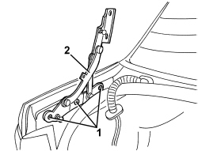

7025B22 L/H OR R/H BOOT LID HINGE (ONE) - R+R WITH LID REMOVED
- Path
- Procedures > 70 FITTINGS > 7025 COMPARTMENT COVERS > 7025B BOOT LID > 7025B22 L/H OR R/H BOOT LID HINGE (ONE) - R+R WITH LID REMOVED
- Kind
- repair procedure (removal / refitting; the operation number is the code)
- Applies to
- all engines; all production periods
- Interactive page
- https://sloeber94.github.io/elrnDB/#/939011216
Applies to: all engines; all production periods
 Removing
Removing
 Refitting
RefittingOp. 7025B26 L/H OR R/H BOOT LID LIFT DEVICE (ONE) - R+R
1. Undo the boot lid hinge bolts.
2. Remove the hinge.

Applies to: all engines; all production periods
Refitting
Removing- Check that the hinge is not damaged.
- Restore the sealant between the hinge and the body, then position the hinge.
- Screw in the bolts without tightening (for alignment)